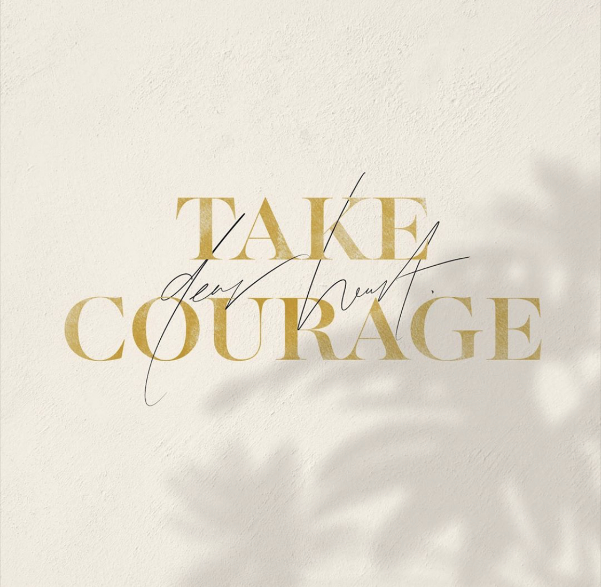
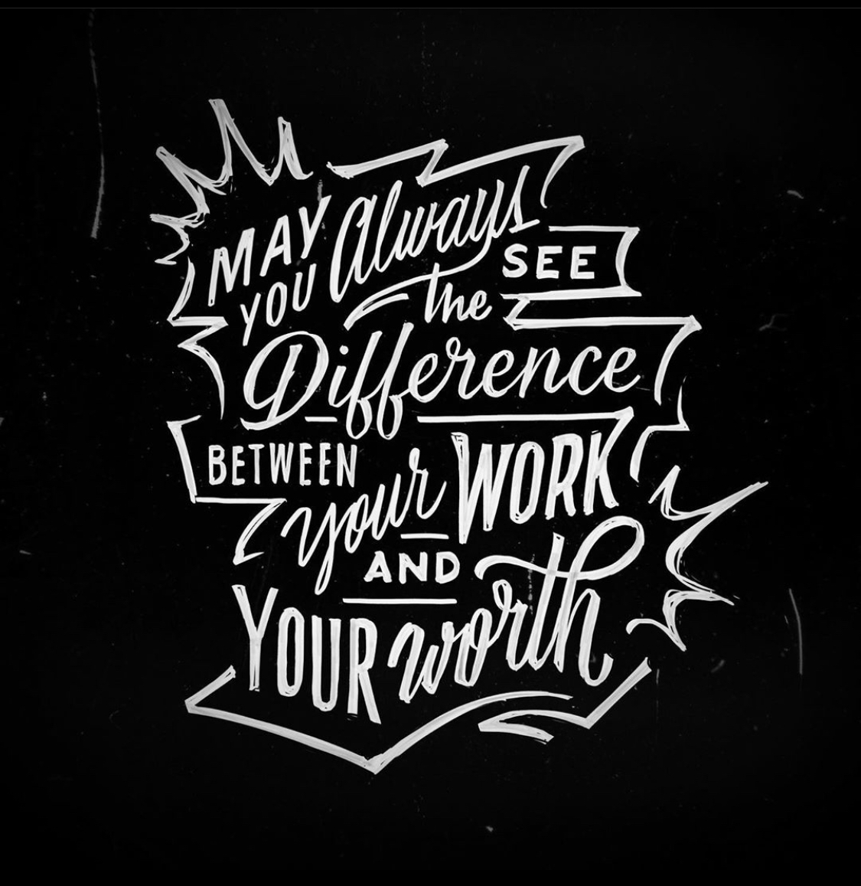

@haveanicedayy_
• Steffi Lynn •
Steffi is full of fun lettering that is bright and really does make me have a nice day upon seeing it. I love how she uses color to convey emotions of cheerfulness. Her work also has such a positive message which is uplifting to see during this hard time.

@thehoneydesign.co
• Brianne Lamour •
I love that Brianne so beautifully captures encouragement and reminders of the Gospel in her illustrations and lettering. I love her usage of warmer tones as her color palette.

@dandrawnwords
• Dan Lee •
Dan's account is a mesh of words, art, faith and inspiration. He has mastered long quote lettering so well and it's so cool to see how his letters wor so beautfully to create a story.